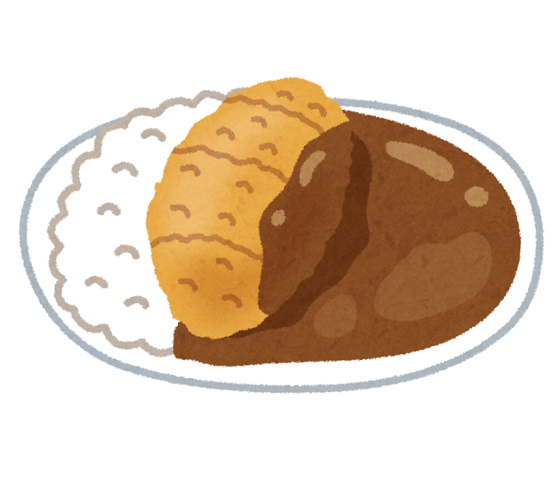

オブジェクト指向とカツ丼の共通点
プログラミングを学ぶ際に最初につまづくポイントとして「オブジェクト指向」が挙げられます。
オブジェクト指向はオブジェクトやメソッドなど抽象的な用語が多く、初心者は苦戦しがちです。
そこで本記事では、オブジェクト指向の特徴・コードを「カツカレー」になぞらえて説明します。

オブジェクトとは、現実世界に存在するモノをコンピュータ上で再現したものを指します。 各オブジェクトはその状態・性質を表すデータ (フィールド) と、機能を表す情報 (メソッド) を有しています。 オブジェクトのフィールドおよびメソッドをまとめたものをクラスと呼びます。
(具体例)
コンピュータ上でカツカレーを再現する場合、「白ごはん」「カツ」「カレー」というオブジェクトに
分けて考えることができます。オブジェクト「カレー」に着目したとき、「色」「各スパイスの量」
「温度」などのデータがフィールドに該当します。また、「ご飯に浸透する」「液体として流れる」
などの機能がメソッドに該当します。
大規模なシステム開発を行うにあたり、オブジェクト指向には以下のメリットがあります。
・オブジェクトごとにプログラムを分けることで全体が把握しやすくなる
(カツカレーの作り方を一気に見るよりも、白ご飯・カツ・カレーの作り方に分けて見るほうが
見通しが良くなる)
・プログラムを容易に変更でき、柔軟性や保守性が向上する
(カレーがうまくご飯・カツにしみこまない場合、カレーのレシピだけを変えればよく、
カツカレー全体のレシピを刷新する必要はない)
・プログラムの一部を簡単に転用でき、再利用性が向上する
(出来の良いカツが作れた場合、そのレシピをカツ丼に転用できる)